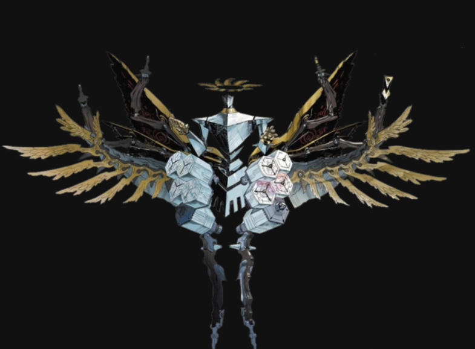

Accomplishment
Throughout the game Joker AKA Ren Amamiya is able to accomplish many things. First he changed the heart of a cruel P.E teacher who would abuse the students at his school. Not only that he saw the school as his castle where he could do anything and get away with it like dating a highschool girl.
Another Accomplishment
Another accomplishment is he exposed a cruel and horrible art teacher who would abuse his painters and take their work and claim it as his own. He also killed Yuska mother, she was a student of his and she had made a painting of her holding her son but Madarame the art teacher had stolen this painting and had painted over the baby to give to make it a mystery of what the woman could be holding not only that he wanted to make cheap copies of the painting and sell to people for a high price claiming that it was the original.
Bigest Accomplishment
His biggest accomplishment has to be saving the world with in the Persona game there is a place called Mementos a place where people desires come to fruition and in the last mission of the game he had planned to steal the treasure to save the people in Japan but while doing so the bad guy of the game tried to stop him and then they fight one was fighting to save the people while the other was fighting to rule over the world and let people horrible desires come to fruition. In the and Ren Amamiya was able to beat him with the power of his friends and from the power of other people believing him.